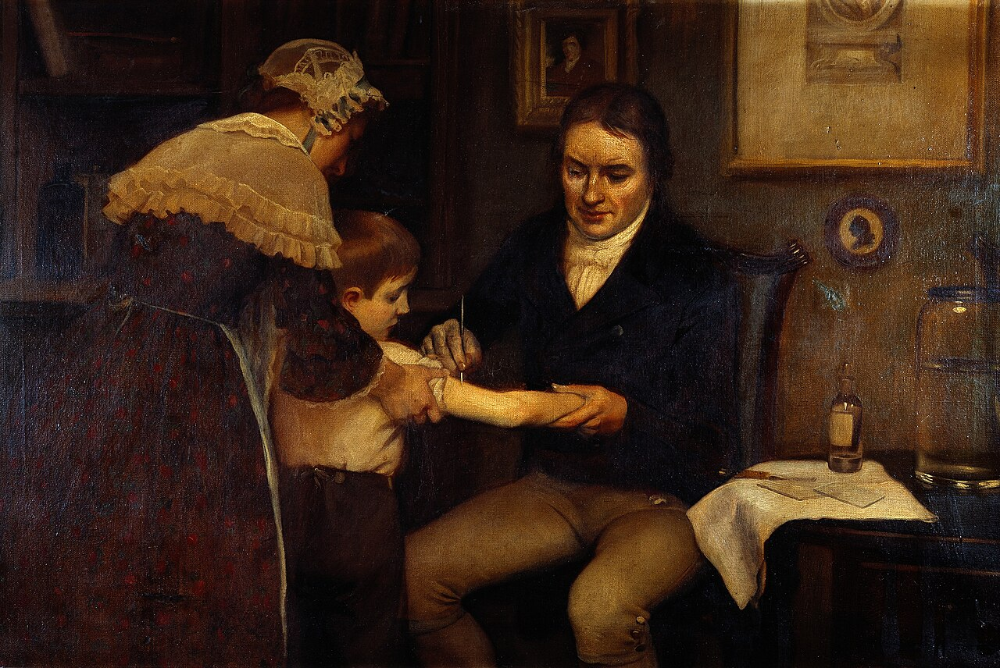

Gestante usuária de drogas injetáveis, não sabe quem é o pai, A positiva, HIV/VDRL/HBsAg negativos, nunca fez pré-natal, nunca vacinada, toxoplasmose G+ M− (imune). O foco da conduta vira vacinas.
Cinco vacinas e o que é vivo proibido
dTpa >20 sem e VSR ≥28 sem em toda gestação. Tríplice viral, varicela e BCG são proibidas.
Parte F · VacinasIDs 135–147E3 · Caso clínico
Vacina viva é proibida
Não usar vacina de microrganismo vivo na gestação. Exemplos proibidos:tríplice viral (sarampo, caxumba, rubéola), varicela, BCG.
As cinco vacinas e os marcos de semana
Cinco vacinas para guardar no pré-natal: tétano (dT/dTpa), hepatite B, influenza, COVID-19 (MS ainda recomenda), vírus sincicial respiratório (VSR).
Vacina
Quando / quantas
Toda gestação?
dT ×2 + dTpa
dTpa >20 sem; dTpa toda gestação
dTpa: sim
Hepatite B
3 doses se não vacinada
se incompleto
Influenza
1× na época da campanha
sazonal
COVID-19
1× conforme MS vigente
conforme vigência
VSR
a partir de 28 sem
sim
Vivas (SCR, varicela, BCG)
não
—
Esquema tétano se nunca vacinada:duas doses de dT + última dTpa. A dTpa deve ser com > 20 semanas. Mesmo com esquema completo prévio, a dTpa se toma em toda gestação. VSR, como a dTpa: em toda gestação (proteção da criança — reduz bronquiolite grave).
Resumo operacional: 5 vacinas: dTpa (>20 sem, toda gestação), hepatite B (3 doses), influenza (sazonal), COVID-19, VSR (≥28 sem, toda gestação). Vivas proibidas: SCR, varicela, BCG.
Linha do tempo vacinal na gestação: dTpa >20 sem, VSR ≥28 sem. Vacinas vivas proibidas.

Vacinação na gestação · NIH · Domínio público
Quiz — Página 10
Q1. Qual vacina não deve ser administrada na gestação?
A Influenza
B dTpa
CTríplice viral
D VSR após 28 sem
✓ Correto! Tríplice viral é vacina viva atenuada — proibida na gestação.
✗ Incorreto. Tríplice viral (sarampo, caxumba, rubéola) é vacina viva — proibida na gestação.
Q2. Sobre dTpa:
A Só se nunca vacinada.
BToda gestação, com >20 semanas.
C Antes de 12 semanas obrigatoriamente.
D Substitui a hepatite B.
✓ Correto! dTpa em toda gestação, com >20 semanas, mesmo com esquema prévio completo.
✗ Incorreto. dTpa é para toda gestação, administrada com >20 semanas.
Q3. VSR na gestante:
A Uma vez na vida, qualquer trimestre.
B A partir de 28 semanas, toda gestação.
C Só se o RN for prematuro (pós-parto).
D Vacina viva atenuada.
✓ Correto! VSR a partir de 28 semanas, em toda gestação, para proteger o RN contra bronquiolite grave.
✗ Incorreto. VSR é administrada a partir de 28 semanas, em toda gestação.